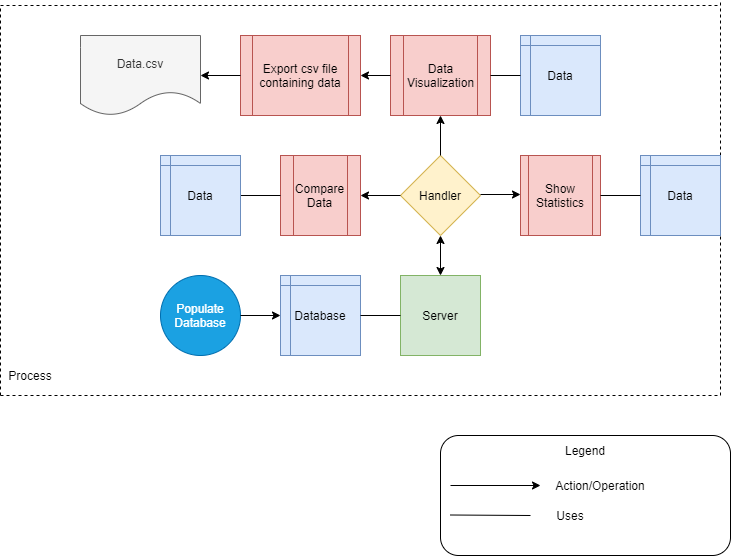
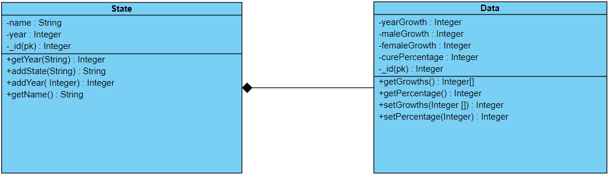

Obesity Prevalence Visualizer - Raport Scholarly
1.Despre aplicație
Aplicația dezvoltată este una de vizualizare a datelor referitoate la obezitatea populației. API-ul este
dezvoltat pe baza datelor din cadrul
BRFSS .
În aplicație vor putea fi vizualizate datele generate de la comparațiile dintre state cu ajutorul unui tabel
și a două grafice. De asemenea, datele vor putea fi exportate într-un format csv.
2.Introducere
Nu de multe ori avem acces la o modalitate de vizualizare a datelor într-un format prietenos cu orice tip de
utilizator (nefamiliarizat cu baze de date în formate de tip csv,sql, etc).
Identificând această nevoie, putem soluționa necesitatea prin construirea unei aplicații de vizualizare a
datelor. Obesity Prevalence Visualiser reprezintă o aplicație Web care permite oricărei persoane să
vizualizeze datele legate de obezitate în mai multe formate: tabel și grafic, având posibilitatea de a
elimina criterii de comparație, evidențiind numai o anumită parte a bazei de date(cea dorită de utilizator).
Aplicația va furniza informații despre obezitatea din anumite țări, pe care user-ul le poate alege.
Informațiile sunt prezentate în 3 pagini diferite: a) prima conține un tabel în care utilizatorul poate
vedea datele brute, având și posibilitatea de export; b) a două conține un grafic(liniar) pentru ficare țară
cu posibilitatea de selectare a criteriilor afișării; c) ultima conține un alt grafic de tip barplot ce
compară două țări în funcție de un anumit indice selectat.
Tehnologii folosite
3.1 Front-end:
Tehnologiile Html,Css,Javascript sunt folosite pentru implementarea interfeței aplicației și de a genera
graficele.
3.2 Backend:
Principala tehnologie aleasă este NodeJS, o tehnologie "open-source server environment", ce
folosește JavaScript pe partea de server. Pentru administrarea datelor am folosit MongoDB(datele pot fi
vizualizate și in Compass).
GitHub-ul a fost folosit pentru dezvoltarea aplicației rapid si eficient.
4.Arhitectura proiectului
4.1.Diagramă

4.2.Context
Accesarea aplicației Obis va direcționa utilizatorul către pagina principală. Aceasta conține un design
simplu și intuitiv, ce-i va permite utilizatorului să acceseze imediat atât un scurt rezumat al problemelor
legate de obezitate, cât și motivele ce duc la aceasta. Utilizatorului îi sunt expuse următoarele
posibilități :
-
Utilizatorul poate accesa rezumatul.
-
Utilizatorul poate accesa unul dintre cele 3 tab-uri ale site-ului :
-
Data Visualization : aici are posibilitatea de a
-
vizualiza datele existente în baza de date și de a urmări manual evoluția de la an la an
a statelor.
-
de a exporta într-un fișier în format csv datele din tabelul vizualizat anterior.
-
Compare Data : aici utilizatorul aplicației poate selecta din baza de date oricare 2 state
disponibile și să facă o comparație între cele două, alegând un criteriu din cele deja
existente. În urmă selecției, un grafic va fi afișat și pe baza graficului, acesta observă
diferența dintre cele două state pentru categoria aleasă anterior.
-
Statistics : utilizatorul poate observa evoluția statelor aflate în baza de date de-a lungul
anilor pe baza criteriilor deja existente. Utilizatorul trebuie să selecteze un stat din cele
disponibile, iar aplicația va afișa cele menționate anterior.
4.3.Diagramă bază de date

5.Funcționalitate
Utilizatorul va face cereri de tip get pentru preluarea datelor pentru a le compara si de a le vizualiza.
6.Model-View-Controller (MVC)

-
Controllers - capteaza si proceseaza actiunile utilizatorilor.
-
Models - responsabile de manipularea operațiunilor logice și de utilizare de informație pentru a rezulta
de o formă ușor de înțeles.
-
View - prezentarea datelor catre utilizator, de obicei in forma unei interfete grafice. Pot exista mai
multe view-uri asociate cu un acelasi model.
-
index.html
-
homepage.html
-
tabel.html
-
charts.html
-
statistics.html
-
info.html
7.Scenarii de utilizare
7.1
User person
-
utilizatori: este reprezentat de orice utilizator normal
-
administrator : este reprezentat de persoanele ce dau update la baza de date
7.2.User stories
-
utilizator:
-
poate accesa sit-ul pentru mai multe metode de vizualizare a anumitor date privind obezitatea in
lume.
-
poate selecta criterii in functie de care se va face vizualizarea datelor.
-
poate compara doua tari la alegere din baza de date.
-
administrator:
-
are acces la baza de date.
-
populeaza initial baza de date.
-
updatează datele sau adauga elemente în baza de date.
-
Scenariu:
-
un utilizator dorește să vizioneze datele
Descriere:
-
Acesta accesează site-ul. Nefiind nevoie de autentificare, acesta poate vedea o descriere a
site-ului fiind direcționat către o pagină de info prin accesarea butonului See More.
-
După care are posibilitate de a alege o metodă de vizualizare/comparare.
Din butonul Data Vizualization este direcționat către un tabel cu datele brute, acesta putând
mai apoi să le și downloadeze.
-
Din butonul Compare Data poate realiza o comparare a două țări în funcție de criteriile alese de
el
-
Din butonul Statistics poate vizualiza un grafic cu evoluția obezității într-o țară selectată de
el
8. Delegare de task-uri
-
Mihaila Emilian
-
Crearea schemelor bazei de date
-
Crearea funcțiilor: Create_data, Get_Data, Create_Country, Get_Country si validarile datelor
O parte din handler pentru funcțiile prezentate mai sus
-
Pagina cu tabelul și legarea paginilor prin index
-
Samson Theodor
-
Creearea server-ului
-
Pagini Web: Info și Home
-
Exportul in csv
-
Adaugare in baza de date
-
Stoleriu Mihail Iulian
-
Functia compare si tot ce ține de aceasta
-
Pagini html: Charts și Compare Data
-
Adaugare in baza de date